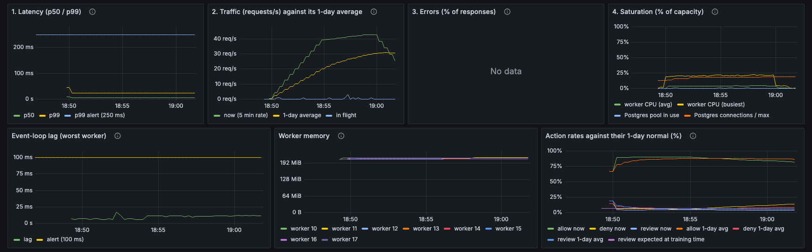
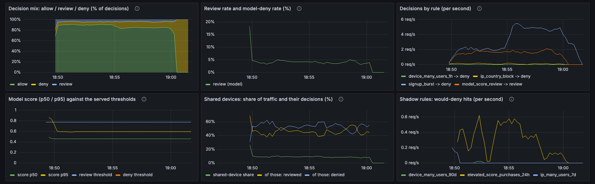
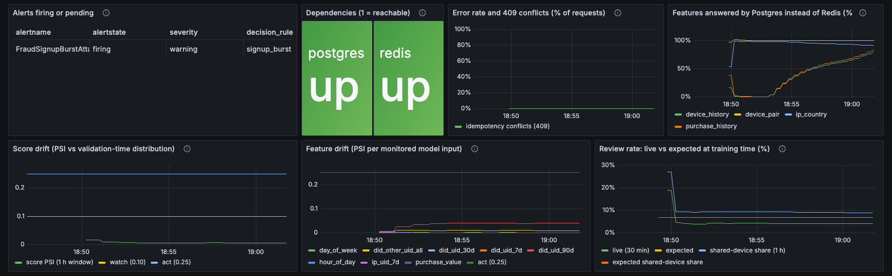
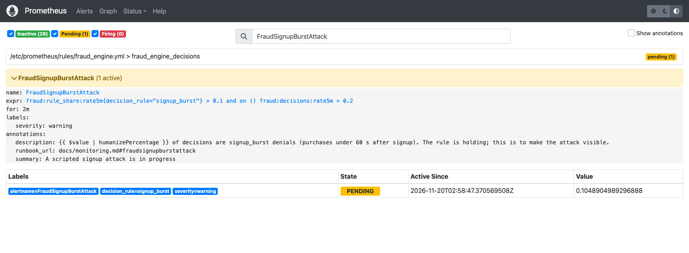
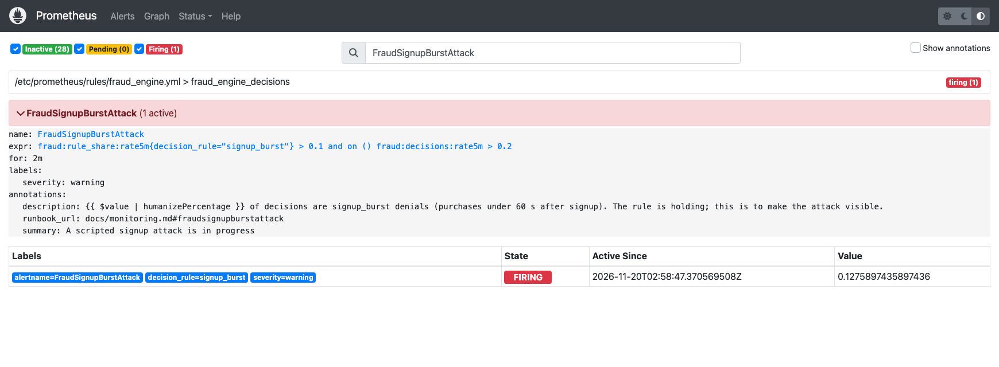
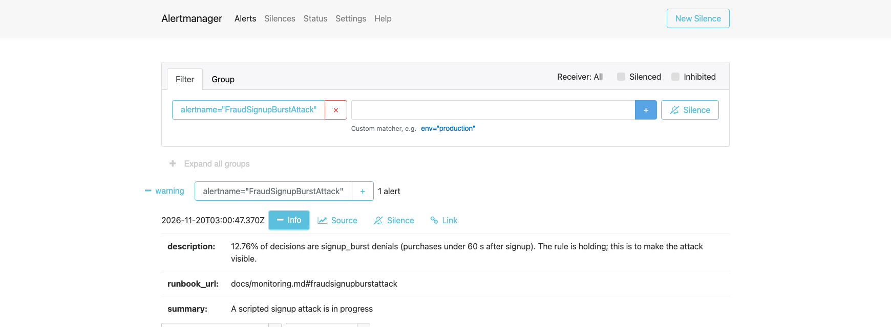

$ python scripts/demo.py 1. A normal customer: account 30 days old, new device, US IP decision ALLOW rule=- model_score=0.446 2. A bot: the purchase arrives 1 second after signup decision DENY rule=signup_burst model not run (hard rule) 4. A request from a comprehensively sanctioned country decision DENY rule=ip_country_block ip_country=Cuba 5. A device that returns after 120 days with a different account decision REVIEW rule=model_score_review model_score=0.794 did_other_uid_all=1 6. A loyal customer: third purchase on their own device decision ALLOW rule=- model_score=0.446 did_other_uid_all=0 8. The same request sent twice (a client retry after a timeout) first transaction_id=b22d49f6-… allow retry transaction_id=b22d49f6-… allow (stored answer, no second decision) 8 / 8 stories gave the expected decision

Golden signals
Decisions and model
Health and drift
Prometheus · pending
Prometheus · firing
Alertmanager